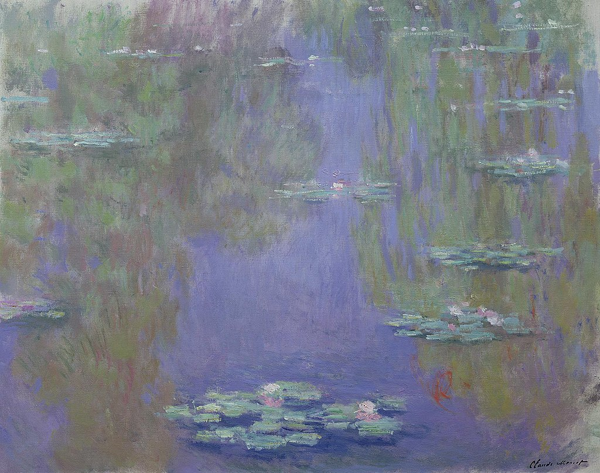

<head>
<meta charset="UTF-8" />
<meta name="keywords" content="drawing, painting" />
<meta name="description" content="drawings by Sunjy" />
<title>Sunjy</title>
<link rel="shortcut icon" type="image/x-icon" href="../../mImages/mCommon/favicon.ico" media="screen" />
<link rel="stylesheet" type="text/css" href="../../mCsses/mCommon/mCssA.css" />
<link rel="stylesheet" type="text/css" href="../../mCsses/mCommon/mCssB.css" />
<link rel="stylesheet" type="text/css" href="../../mCsses/mCommon/mCssC.css" />
<link rel="stylesheet" type="text/css" href="../../mCsses/mCommon/mCssD.css" />
<link rel="stylesheet" type="text/css" href="../../mCsses/mContent/mCssA.css" />
<link rel="stylesheet" type="text/css" href="../../mCsses/mContent/mCssB.css" />
<link rel="stylesheet" type="text/css" href="../../mCsses/mContent/mCssC.css" />
<link rel="stylesheet" type="text/css" href="../../mCsses/mContent/mCssD.css" />
</head>
<script type="text/javascript" src="../../mScripts/mContent/mContentAA.js" /></script>
<script type="text/javascript" src="../../mScripts/mContent/mContentAB.js" /></script>
<script type="text/javascript" src="../../mScripts/mContent/mContentAC.js" /></script>
<script type="text/javascript" src="../../mScripts/mContent/mContentAD.js" /></script>
<script type="text/javascript"></script> 
<script type="text/javascript">
document.write('<div class="mImgAbsolute"></div>');
/*
document.write('<p class="mFontSizeBColor" />From a white paper...</p>');
document.write('<table class="center"><tr><td>');
document.write('');
document.write('</td></tr></table>');
*/
</script>


<script type="text/javascript">
document.write('<p class="mFontSizeBColor" />Nymphéas (1903)</p>');
document.write('<p class="mFontSizeSColor" />Nymphéas by Claude Monet, demonstrates how the water lilies are eventually reduced to simple touches of color to contrast the floating world of weeping willow and other tree reflections in the pond filled with sky blue reflections.<br><br>Claude Monet, left by his son his property at Giverny. His son left the property to the Académie des Beaux-Arts in 1966.<br><br>The Museum at Giverny opened to public visit in 1980 after completion of large-scale restoration work.<br><br>The Nymphea’s studio was restored, and Monet’s collection of Japanese woodblock prints was displayed in the manner chosen by the master himself; the gardens were replanted as they once were.<br><br>The house has become a popular tourist attraction.<br></p>');
document.write('<table class="center" /><tr><td>');
document.write('<br>Claude Monet, left by his son his property at Giverny. His son left the property to the Académie des Beaux-Arts in 1966.<br><br>The Museum at Giverny opened to public visit in 1980 after completion of large-scale restoration work.<br><br>The Nymphea’s studio was restored, and Monet’s collection of Japanese woodblock prints was displayed in the manner chosen by the master himself; the gardens were replanted as they once were.<br><br>The house has become a popular tourist attraction.<br>" />');
document.write('</td></tr></table>');
</script>


